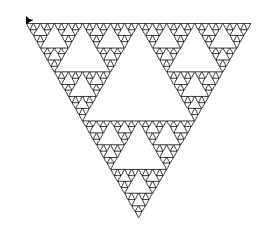

Le programmes contient 4 grands et principal principe :
Dessiner permet de tracer une courbe avec un angle et une longueur données. Elle appelle TriangleSierpinski qui elle meme appelle CourbeSierpinski qui elle même appelle RegleSierpinski.
RegleSierpinski permet de décoder la chaine de caractère donnée.
CourbeSierpinski va appeller Niter * la "regleSierpinski" pour créer la courbe de Sierpinski.
TriangleSierpinski trace le motif initiale en fonction de Niter.

Tapis de Sierpinski avec Niter 2.
Tapis de Sierpinski avec Niter 5.
Durant la programmation, j'ai pas bien compris le fais de devoir appellé la fonction triangleSierpinski dans la fonction dessiner.
Sinon dans l'ensemble se n'était pas vraiment compliqué.